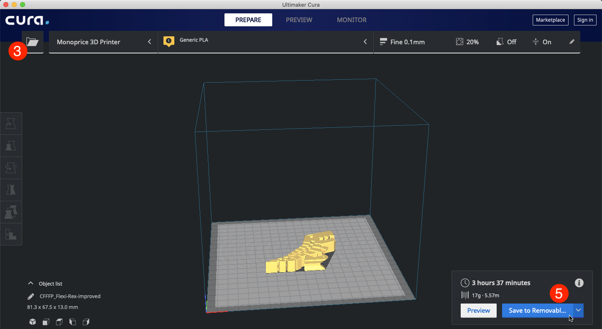

Introduction:
This guide covers the basics of 3D printing with the Monoprice Maker Ultimate. I’m assuming that you’ve already read through the Maker Ultimate User Manual and that your printer is already assembled. I am using a Mac, so if you’re on a Windows system, the software may look different. However, I’ve made sure to include Windows-specific instructions for important steps. That being said, let’s jump into 3D printing!
Downloading and Installing Ultimaker Cura:
- Visit this link to download Ultimaker Cura
- Click download, select your operating system, then click download now.
- Install Cura:
- Mac:
-
- Open the .dmg file
- Drag Cura into the applications folder shortcut
- Windows:
-
- Run Ultimaker_Cura-[version].exe
- Mac:
Leveling the buildplate:
To start leveling, turn on your printer and select Maintenance > Buildplate, then follow the steps on the
LED screen.
I used a digital caliper to take measurements. For the nozzle to be 1 mm from the buildplate, the top of
the nozzle should be 20 mm from the top of the buildplate and 26.5 mm from the underside edges of the
buildplate.
Printing your first model:
You’re going to need:
- An SD Card
- A 3D model (For the purpose of this guide, we’ll use a model from Thingverse: Flexi Rex by user DrLex.)
- SD to USB adapter (optional)
And to print:
- If your model is still zipped, unzip your file and take note of the file location
- Open Ultimaker Cura (If you see a security warning, just click open)
- Click the icon and select your file
- Click the Slice button
- Click the Save to Removable Drive button 
- Click the Eject button
- Remove your SD card and insert it into your 3D printer
- On the printer, select Print > Your_model_name.gcode > continue
- Wait for print to finish
In-depth Printing:
Find/make models
There are many online communities for sharing and making 3D models. I’ve listed a few below.
| Site | URL | Description |
|---|---|---|
| Thingiverse | www.thingiverse.com | Active online community; Many Free-to-download models; Unpredictable quality models; Can be difficult to browse and search; no account required |
| Cults | www.cults3d.com | Lots of free-to-download models; Some models require purchase; Can be difficult to search; Requires account to download models |
| Pinshape | www.pinshape.com | Well-organized; many free models; some models require purchase; requires account to download models |
| MyMiniFactory | www.myminifactory.com | Easy to navigate; many free and paid models; no account required |
| Yeggi | www.yeggi.com | 3D model search engine; Useful for finding models in any database |
| TinkerCAD | www.tinkercad.com | Online 3D modeling software; Free to use with an account; Easy to learn; Lots of online tutorials; Somewhat limited in its capability |
Once you’ve decided on a model, download it and unzip it, taking note of where the files are saved.
Import model
Open Ultimaker Cura and import your model. There are several ways to do this:
- click the icon and select your file
- Click File > Open File(s) (or press ⌘ + O on mac, CTRL + O on windows) from the ribbon and select your file
- Drag and drop your file into Ultimaker Cura
Prepare model for printing:
Position model
You can move your model by clicking and dragging or by manually entering the position coordinates. Additionally, you can rotate, rescale, and mirror your model using the positioning tools on the left side of the window.
Set print options:
For some prints, it may be necessary to play with the print settings. Here is a list of the basic settings and what they do.
| Setting | Description |
|---|---|
| Layer Height | Affects the speed, detail, and smoothness of a print. A larger layer height results in a faster, less detailed, rougher print and a smaller layer height results in a slower, more detailed, smoother print. |
| Infill | Changes density of print. A higher infill can take longer, but increases the structural integrity of a print. A lower infill can be faster but makes a print more brittle. |
| Gradual Infill | Increases infill during print. Can increase print speed. Select this option if detail isn’t important near the bottom of the print. |
| Support Structures | Generates small, removable structures in areas with overhang. Select this if your print has large areas with overhang. You can also choose certain areas to print without support structures using the “block supports” tool. |
| Adhesion | Generates small, removable platform underneath print. Prevents print from falling over mid-print. |
Advanced Print Settings
Cura includes some more advanced settings. For a detailed guide to each of these settings, visit this site.
Save to SD Card:
If you haven’t already inserted your SD card, do it now. Click the slice button. Wait for the program to generate the .gcode file, then click the “Save to Removable Drive” button. Then, click the “Eject” button and remove the SD card.
Printing Model
Insert your SD card into the printer. Select Print > Your_Model_Name. The print should begin. I recommend watching your print for the first couple layers to make sure your model is printing correctly. If you notice printing errors, you can change settings in Cura, or tweak your print settings in the “Tune” menu on the printer.
Removing and cleaning model
Once your print has finished, it can be removed from the print bed with a spatula. If it takes more than gentle force to remove print, it can help to heat up the print bed. Select Maintenance > Advanced > Heatup buildplate. Set the temperature to 60˚ C. Increase if necessary. If you printed with supports, you can remove them now using a craft knife or by just breaking them with your hands.
Troubleshooting:
Often times, prints can turn out lower-than-expected quality or can fail to print entirely. When this happens, I find a good first step is to Google your issue. Usually, other people have run into the same issue and shared their solution. Additionally, I have included a log of the issues I have experienced and the steps I took to solve the problem.
Further Reading:
Ultimaker Cura TutorialA comprehensive guide to Ultimaker Cura. Includes a useful section about each of the print settings and what they do.